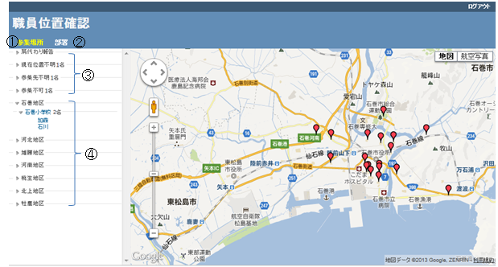

① タブメニュー「参集場所」をクリックすることにより、参集場所がマップに表示されます。
② タブメニュー「部署」をクリックすることにより、部署毎にマップ表示されます。
③ 参集出来ない、または参集不明者を表示します。
・「肩代わり報告」：代行して参集出来ないことを報告します。
・「現在位置不明」：位置情報が不明であることを表示します。
・「参集先不明」：「参集場所」を選択されていない場合に表示します。
・「参集不可」：参集場所へ行けない方を表示します。
④ 地区毎、参集場所毎に職員名を表示します。職員名をクリックすることにより、マップ表示します。また、GoogleMap上のバルーンをクリックすることにより、職員氏名、連絡先(メールアドレス)、参集できない理由(参集不可の者の場合のみ)が表示されます。
